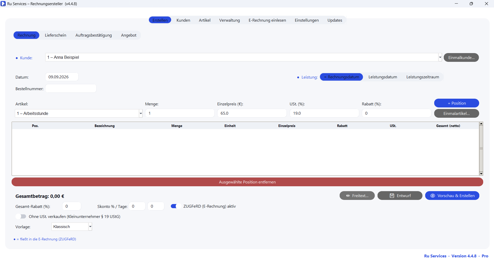
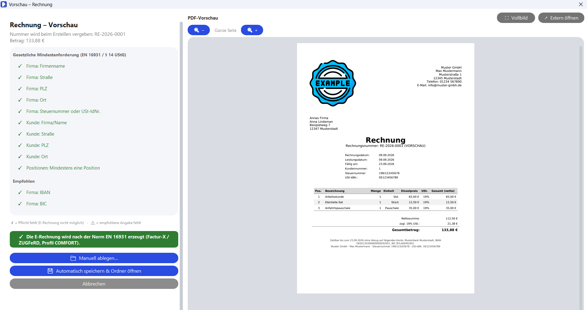
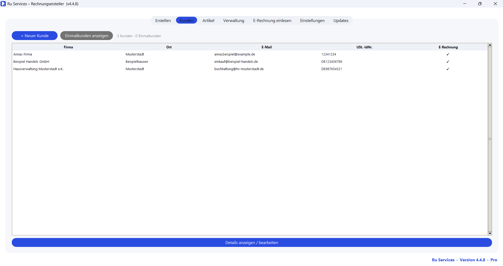
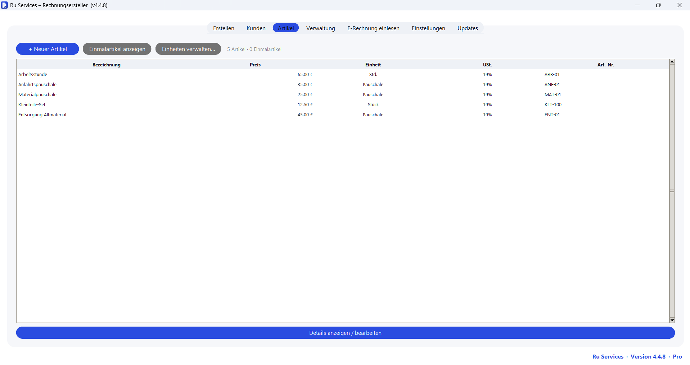
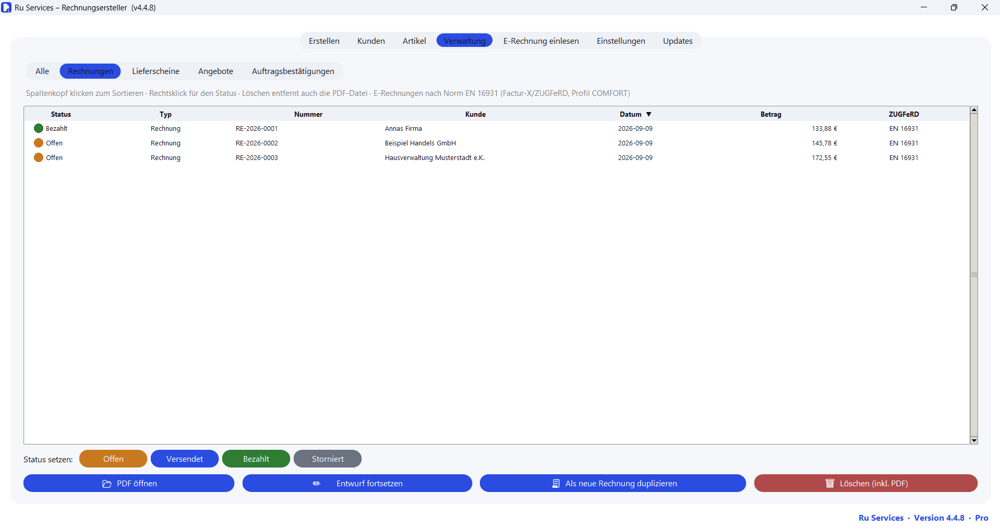
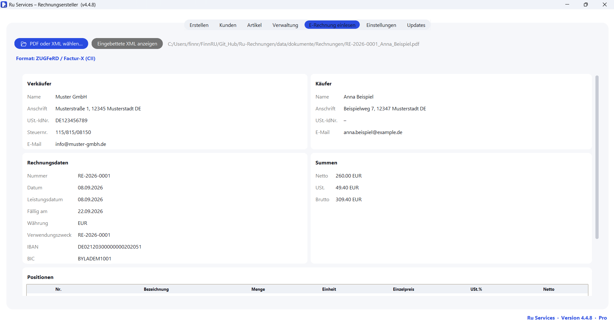
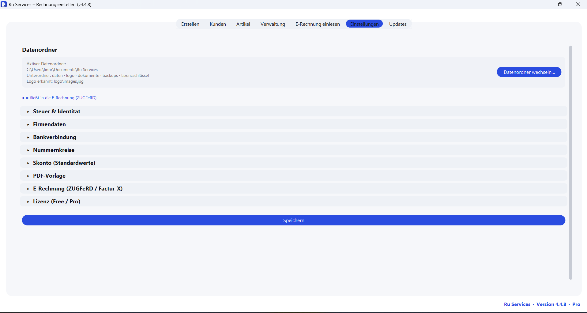

Rechnungen schreiben, die den gesetzlichen Anforderungen genügen.
Ru Services ist ein Rechnungsprogramm für kleine Betriebe: Rechnungen, Lieferscheine, Angebote – inklusive E-Rechnung nach EN 16931 (ZUGFeRD / Factur-X). Läuft komplett auf deinem Rechner: ohne Cloud, ohne Abo, ohne Benutzerkonto.
Kostenlose Version ohne Zeitlimit · keine Registrierung · Installer ca. 41 MB · auch ohne Administratorrechte installierbar
Warum jetzt
Die E-Rechnung ist Pflicht – Ru Services deckt sie ab
Seit dem 1. Januar 2025 muss jedes inländische Unternehmen B2B-E-Rechnungen empfangen können. Die Pflicht zum Ausstellen kommt gestaffelt. Eine reine PDF ist dann keine gültige Rechnung mehr.
seit 2025
Jedes Unternehmen muss E-Rechnungen empfangen und lesen können. Ru Services liest ZUGFeRD / Factur-X und XRechnung – in jeder Version, auch kostenlos.
ab 2027
Unternehmen mit mehr als 800.000 € Vorjahresumsatz müssen E-Rechnungen ausstellen. Mit Ru Services Pro erzeugst du sie nach EN 16931.
ab 2028
Die Ausstellungspflicht gilt für alle inländischen B2B-Rechnungen. Wer heute mit Ru Services arbeitet, ist vorbereitet.
Angaben ohne Gewähr – maßgeblich ist die jeweils geltende Fassung des Wachstumschancengesetzes bzw. des UStG. Ru Services ersetzt keine Steuerberatung.
In 3 Minuten erklärt
Das Programm im Überblick
Bedienung
So arbeitest du mit Ru Services
Ein Fenster, sieben Bereiche. Klick auf ein Bild, um es groß zu sehen.
SCHRITT 1 · ERSTELLEN
Rechnung, Lieferschein, Angebot oder Auftragsbestätigung
Kunde wählen, Positionen aus der Artikelliste hinzufügen, fertig. Menge, Einzelpreis, USt-Satz und Rabatt je Position; Gesamt-Rabatt und Skonto auf die Summe.
- Einmalkunden und Einmalartikel direkt beim Erstellen anlegen
- Leistungsdatum oder Leistungszeitraum, Bestellnummer
- Schalter „Ohne USt. verkaufen“ für Kleinunternehmer nach § 19 UStG
- ZUGFeRD (E-Rechnung) pro Rechnung an- oder ausschalten
- Als Entwurf speichern und später weiterbearbeiten
{kind=link}

SCHRITT 2 · PRÜFEN & ERSTELLEN
Vorschau mit Zwei-Stufen-Prüfung
Vor dem Erstellen zeigt Ru Services die fertige PDF und prüft zweistufig: gesetzliche Mindestangaben (EN 16931 / § 14 UStG) und empfohlene Angaben – mit Ampel.
- PDF-Vorschau: blättern, zoomen, Vollbild, extern öffnen
- Fehlt eine Pflichtangabe, wird die E-Rechnung nicht erzeugt
- E-Rechnung nach EN 16931 (Factur-X / ZUGFeRD, Profil COMFORT, PDF/A-3)
- Automatisch ablegen oder Speicherort selbst wählen
{kind=link}

BEREICH · KUNDEN
Kundenverwaltung
Alle Kunden mit Anschrift, E-Mail und USt-IdNr. an einem Ort. Kennzeichnung, ob ein Kunde eine E-Rechnung erwartet.
- Einmalkunden getrennt, zählen nicht ins Limit der kostenlosen Version
- Alle Daten als lesbare JSON-Dateien in deinem Datenordner
{kind=link}

BEREICH · ARTIKEL
Artikelverwaltung
Artikel mit Preis, Einheit, USt-Satz, Gewicht, Artikelnummer und GTIN/EAN. Eigene Mengeneinheiten frei anlegen.
- Gewicht je Artikel – für Lieferscheine mit Gesamtgewicht
- Einmalartikel für einmalige Positionen
{kind=link}

BEREICH · VERWALTUNG
Alle Dokumente mit Status im Blick
Jede erstellte Rechnung, jeder Lieferschein, jedes Angebot – mit farbigem Status, sortierbar nach jeder Spalte.
- Status je Rechnung: Offen · Versendet · Bezahlt · Storniert
- PDF öffnen, Entwurf fortsetzen, als neue Rechnung duplizieren
- Löschen entfernt auch die PDF-Datei
- Lückenlose Nummernkreise mit Platzhalter
{JAHR}und Zähler-Reset zum Jahreswechsel
{kind=link}

BEREICH · E-RECHNUNG EINLESEN
Eingehende E-Rechnungen lesen
PDF mit eingebettetem ZUGFeRD / Factur-X oder reine XRechnung-XML öffnen – Ru Services zeigt Verkäufer, Käufer, Positionen und Summen übersichtlich an.
- Format wird automatisch erkannt
- Eingebettete Roh-XML auf Wunsch anzeigen
- In jeder Version enthalten – auch kostenlos
{kind=link}

BEREICH · EINSTELLUNGEN
Einmal einrichten, dann läuft es
Firmendaten, Steuernummer, Bankverbindung, Logo, Nummernkreise, Standard-Skonto, PDF-Vorlage und E-Rechnungs-Optionen – alles an einer Stelle.
- Datenordner frei wählbar – lokaler Ordner oder Netzlaufwerk
- Automatische monatliche Datensicherung
- Eigenes Firmenlogo auf jeder PDF
{kind=link}

Warum Ru Services
Gemacht für kleine Betriebe in Deutschland
Läuft offline
Kein Internet nötig, kein Server, kein Konto. Das Programm startet und arbeitet auch ohne Netz – im Büro, auf dem Hof, im Zug.
Deine Daten bleiben bei dir
Alle Rechnungen, Kunden und Artikel liegen als lesbare JSON-Dateien in einem Ordner, den du bestimmst. Nichts wird übertragen.
Keine Limits, unbegrenzter Umsatz
Ru Services rechnet keine Belege, keine Umsätze und keine Nutzer ab. In Pro auch unbegrenzt viele Kunden und Artikel.
Für deutsche Rechnungspflichten
Berücksichtigt die Pflichtangaben nach § 14 UStG, den Kleinunternehmer-Hinweis nach § 19 UStG und die Struktur nach EN 16931.
Unterstützt GoBD-konformes Arbeiten
Lückenlose Nummernkreise, automatische Monatssicherungen und eine geordnete Belegablage in Unterordnern je Dokumentart.
Einmal zahlen statt Abo
Die kostenlose Version bleibt kostenlos. Pro kostet einmalig 149 € – kein Monatsbeitrag, keine Zwangs-Updates.
Funktionsübersicht
Was das Programm kann
In beiden Versionen Free & Pro
Alles, was du für Rechnungen und Lieferscheine brauchst.
- Rechnungen und Lieferscheine als PDF, mit eigenem Firmenlogo
- Kunden- und Artikelverwaltung, Einmalkunden und Einmalartikel
- E-Rechnungen einlesen (ZUGFeRD / Factur-X, XRechnung)
- PDF-Vorschau mit Zwei-Stufen-Prüfung (EN 16931 / § 14 UStG)
- Dokumentenübersicht mit Status, geordnete Ablage, lückenlose Nummernkreise
- Kleinunternehmer-Modus § 19 UStG, Skonto und Rabatt
- Läuft komplett lokal, Daten als JSON, automatische Monatssicherung
Nur in Pro Pro · 149 €
Alles aus Free, plus:
- Angebote und Auftragsbestätigungen (mit „gültig bis“, Freibleibend-Hinweis, voraussichtlichem Liefertermin)
- E-Rechnung erzeugen: strukturierte XML nach EN 16931 in der PDF (ZUGFeRD / Factur-X, Profil COMFORT, PDF/A-3)
- Unbegrenzt viele Kunden und Artikel
- Alle PDF-Vorlagen: „Modern“ und „Kompakt“ zusätzlich zu „Klassisch“
- Feste Steuernummer über den Lizenzschlüssel – an einen Betrieb gebunden, in den Einstellungen gesperrt
- E-Mail-Support
Free & Pro
Kostenlos starten – Pro einmalig 149 €
Die kostenlose Version ist voll nutzbar und ohne Zeitlimit. Pro ist eine einmalige Zahlung – kein Abo. Als Kleinunternehmer nach § 19 UStG weise ich keine Umsatzsteuer aus.
| Funktion | Free | Pro |
|---|---|---|
| Rechnungen, Lieferscheine | ✓ | ✓ |
| Angebote, Auftragsbestätigungen | – | ✓ |
| E-Rechnung (ZUGFeRD / Factur-X) einlesen | ✓ | ✓ |
| E-Rechnung erzeugen | – | ✓ |
| Kunden / Artikel | max. 10 / 10 | unbegrenzt |
| Steuernummer | frei eingebbar | über Lizenzschlüssel, fest |
| PDF-Vorlagen | „Klassisch“ | Klassisch, Modern, Kompakt |
| Verwaltung, Backups, Kleinunternehmer-Modus, PDF-Vorschau | ✓ | ✓ |
| Preis | dauerhaft kostenlos | einmalig 149 € |
Einmalkunden und Einmalartikel zählen nicht in das Limit der kostenlosen Version.
In 4 Schritten
So bekommst du Pro
Einen Online-Kauf gibt es derzeit noch nicht. Der Lizenzschlüssel wird persönlich per E-Mail ausgestellt und gilt für genau deine Steuernummer.
Herunterladen
Kostenlose Version installieren und einrichten.
Pro anfragen
Im Programm den Reiter „Pro“ öffnen oder eine E-Mail mit deiner Steuernummer an finn.rummel@gmail.com.
Schlüssel erhalten
Der signierte Lizenzschlüssel kommt per E-Mail zurück – gültig für diese Steuernummer.
Aktivieren
Schlüssel unter „Pro“ eintragen, Programm neu starten – Pro ist aktiv.
Jetzt kostenlos herunterladen
Ru Services für Windows 10 und 11. Kostenlose Version ohne Zeitlimit, ohne Registrierung. Installer ca. 41 MB.
Beim ersten Start zeigt Windows eventuell eine SmartScreen-Meldung („Der Computer wurde durch Windows geschützt“). Das Programm ist noch nicht mit einem kostenpflichtigen Zertifikat signiert – auf „Weitere Informationen“ und dann „Trotzdem ausführen“ klicken. Details im FAQ.
Häufige Fragen
FAQ
Welches Betriebssystem brauche ich?
Windows 10 oder 11. Der Installer ist ca. 41 MB groß und lässt sich auch ohne Administratorrechte installieren. Für macOS oder Linux gibt es das Programm nicht.
Was bedeutet die Windows-SmartScreen-Warnung beim Start?
Das Programm ist derzeit nicht mit einem kostenpflichtigen Code-Signatur-Zertifikat signiert. Windows zeigt deshalb beim ersten Start „Der Computer wurde durch Windows geschützt“. Klick auf „Weitere Informationen“ und dann „Trotzdem ausführen“. Nach dem ersten Start kommt die Meldung nicht wieder.
Werden meine Daten in eine Cloud übertragen?
Nein. Ru Services läuft vollständig auf deinem Rechner. Es gibt keinen Server, kein Benutzerkonto und keine Registrierung. Alle Daten liegen als lesbare JSON-Dateien in einem Ordner, den du selbst festlegst – lokal oder auf einem Netzlaufwerk.
Kann ich Daten aus einem alten Programm übernehmen?
Kunden und Artikel lassen sich neu anlegen; einen automatischen Import aus anderen Programmen gibt es aktuell nicht. Da die Daten als offene JSON-Dateien gespeichert werden, ist eine manuelle Übernahme grundsätzlich möglich. Bei Fragen dazu einfach eine E-Mail schreiben.
Was ist der Unterschied zwischen E-Rechnung einlesen und erzeugen?
Einlesen (eingehende E-Rechnungen von Lieferanten anzeigen) ist in jeder Version enthalten, auch kostenlos. Das Erzeugen eigener E-Rechnungen nach EN 16931 (strukturierte XML in der PDF) ist Teil von Pro.
Fallen nach dem Kauf weitere Kosten an?
Nein. Pro ist eine einmalige Zahlung von 149 €. Es gibt kein Abo und keine nutzungsabhängige Abrechnung – egal wie viele Rechnungen oder wie viel Umsatz.
Wie sicher ist der Lizenzschlüssel?
Der Lizenzschlüssel ist mit einem Ed25519-Verfahren signiert und an deine Steuernummer gebunden. Er wird persönlich per E-Mail ausgestellt.
Ist Ru Services rechtssicher / GoBD-konform?
Ru Services unterstützt gesetzeskonformes Arbeiten: Pflichtangaben nach § 14 UStG, Kleinunternehmer-Hinweis nach § 19 UStG, E-Rechnungs-Struktur nach EN 16931, lückenlose Nummernkreise, Monatssicherungen und geordnete Belegablage. Die Verantwortung für korrekte Rechnungen und die Einhaltung steuerlicher Pflichten liegt beim Nutzer. Das Programm ersetzt keine Steuerberatung.